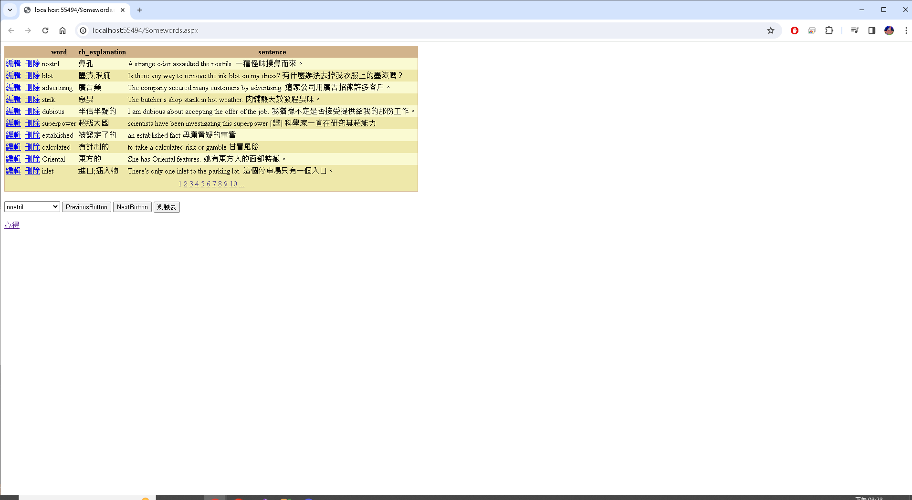

GEPT Words 單字測驗 ASP.NET 程式開發心得
作者：CBF110013 吳俊良
開發思路與解決方案
在這裡，你可以描述你在開發過程中的思考過程，以及你如何解決問題的。
先看題目要求，之後開始構想每個物件該如何實現。
使用的技術與引用來源
在這裡，你可以列出你在開發過程中使用到的技術，以及你參考的資料來源。
我通常都是一邊開著上課的影片，一邊聽著老師的方法一邊做。
上課時老師檢討題目和參考同學的作法，可以從中得到不同的方法及概念。
遇到的問題與解決方法
在這裡，你可以分享你在開發過程中遇到的問題，以及你是如何解決這些問題的。
有時候會遇到有些題目，自己就算是絞盡腦汁也想不到該怎麼做。
如果遇到無法解決的問題，就請教同學或者是老師。
修改後的程式內容
在這裡，你可以分享你修改後的程式碼，並解釋你做了哪些改變。
這邊是將DDL1.SelectedItem定義成一個字串，再將翻譯網站的網址片段也定義成一個字串，之後把兩者合併就能將顯示出來的單字變成超連結。
程式執行畫面
在這裡，你可以分享你的程式執行畫面，並解釋每個畫面的功能。
就和作業的題目一樣可以編輯單字，顯示所選單字的中文和翻譯網站，進到測驗頁面。
畫面展示
個人心得與反思
在這裡，你可以分享你對於這次開發經驗的感想，以及你從中學到了什麼。
我在這個學期的課程中，學到了各式不同的網頁設計功能及概念，但是我的能力還不夠成熟，無法獨力完成一項任務。
希望將來我可以有足夠的能力，可以自己玩成一個擁有完整功能的網頁。